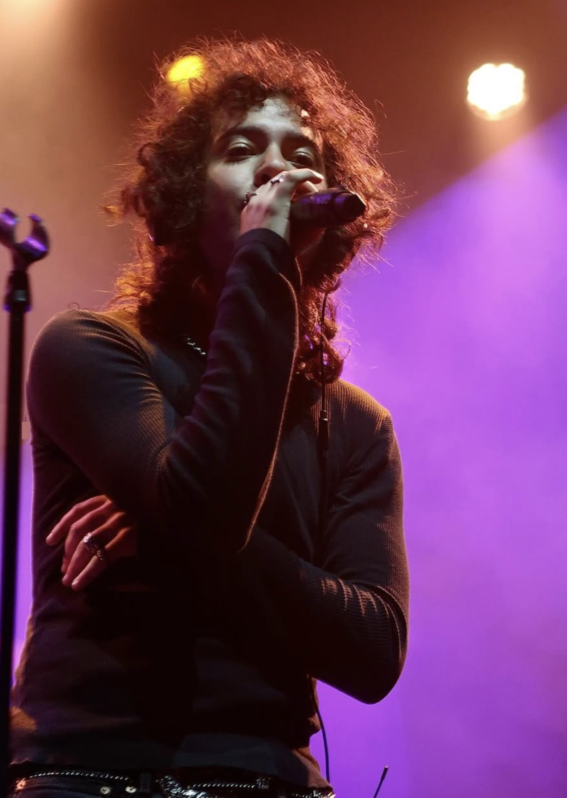
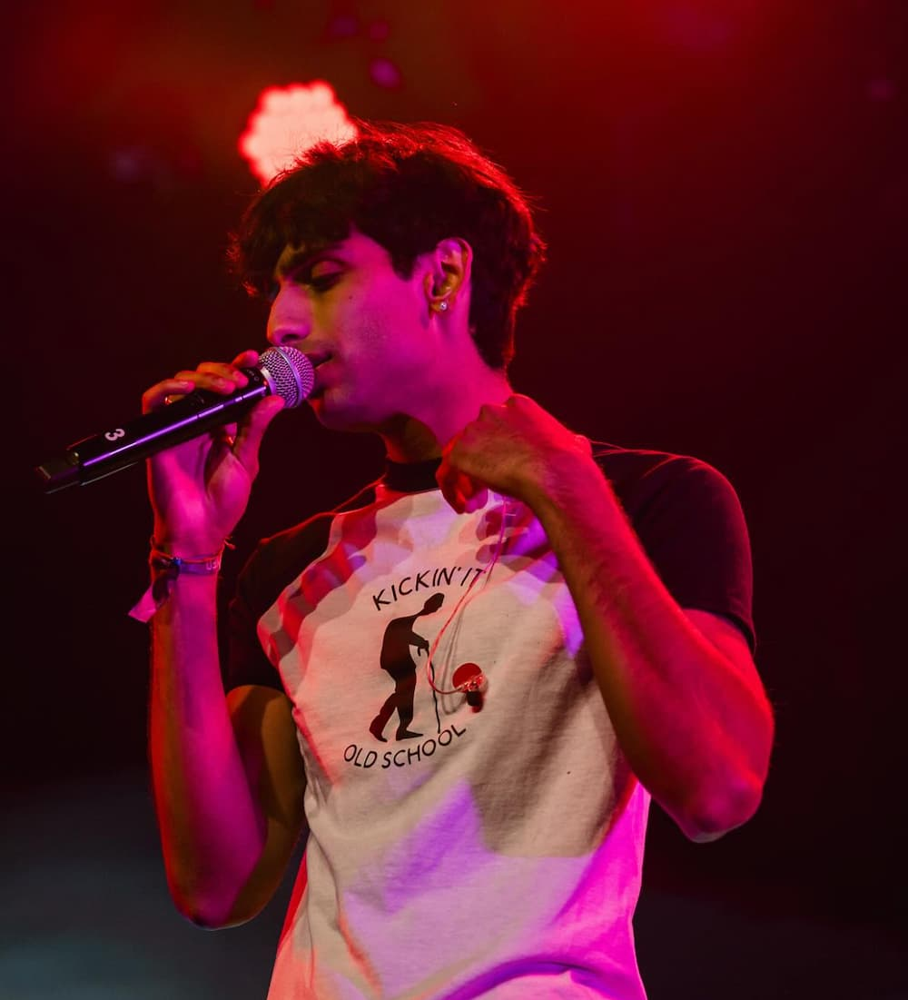
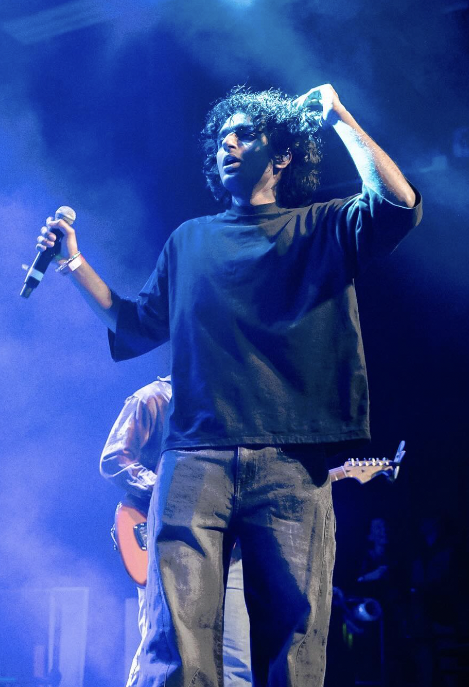
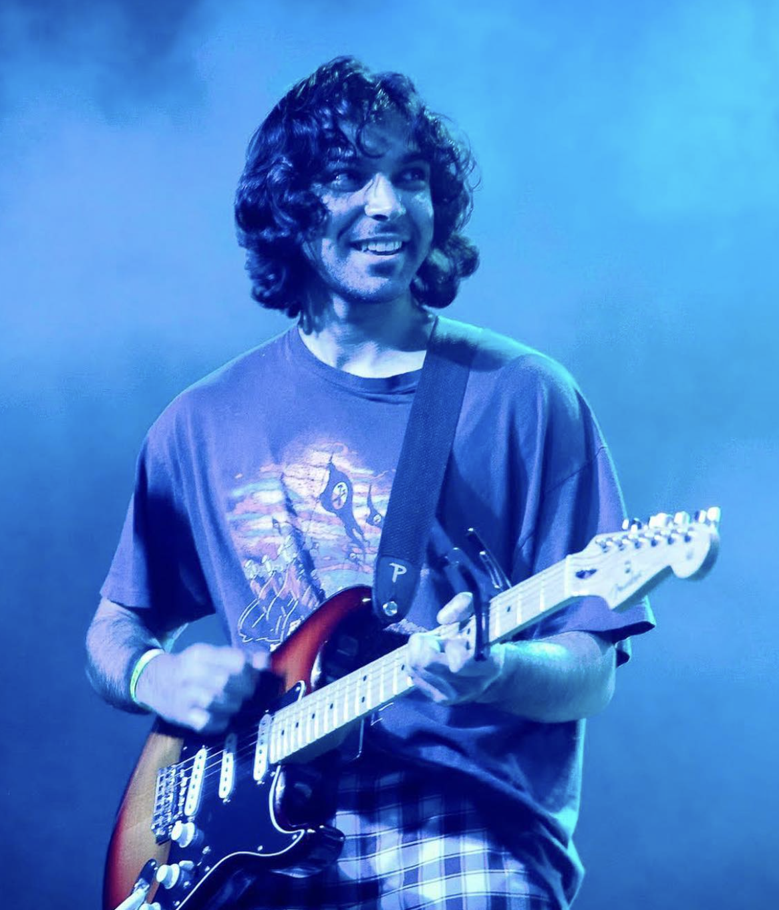
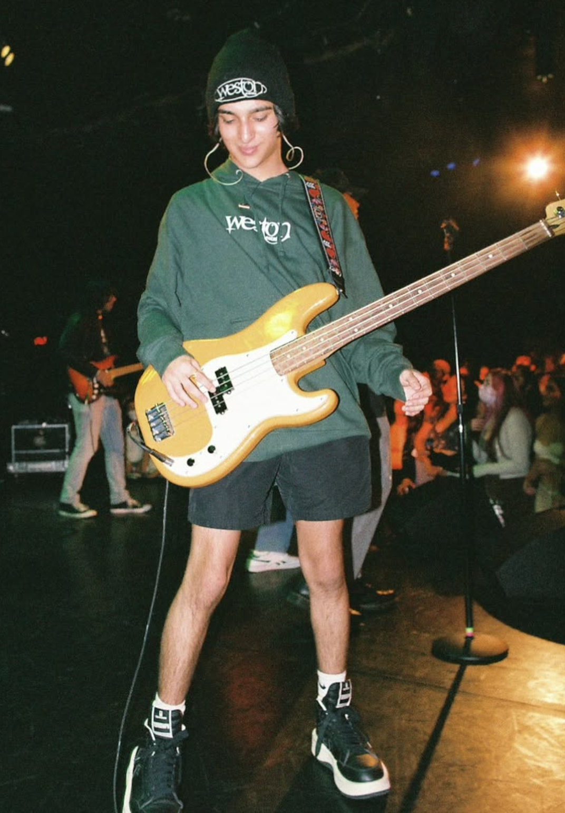

|  |
Marco Gomez
Vocalist
Marco, also known as Marco Luka, is a vocalist in the band. Of
Cuban-American descent, he brings a unique cultural perspective to
Weston Estate's music. His solo endeavors and distinctive voice
contribute to the band's diverse soundscape.
|
|  |
Tanmay Joshi
Vocalist
Tanmay is another vocalist in Weston Estate. He played a pivotal
role in naming the band, drawing inspiration from a neighborhood
called Weston Estates near his residence. His vocal style adds a
distinctive layer to the band's overall sound.
|
|  |
Manas Panchavati
Vocalist
Manas serves as one of the vocalists for the band. He has been
instrumental in shaping the band's lyrical content, drawing
inspiration from personal experiences and emotions. His
contributions help infuse depth and relatability into their music.
|
|  |
Srikar Nanduri
Guitarist
Srikar is the lead guitarist and a key songwriter for Weston Estate.
Growing up in Cary, North Carolina, he began his musical journey
with the violin before teaching himself guitar during middle school.
His diverse musical background contributes to the band's unique
sound.
|
|  |
Abhi Manhass
Production
Abhi handles the production and engineering aspects for Weston
Estate. His journey into music production began in high school when
he received FL Studio as a gift. Since then, he has been crafting
beats and overseeing the technical facets of the band's music.
|